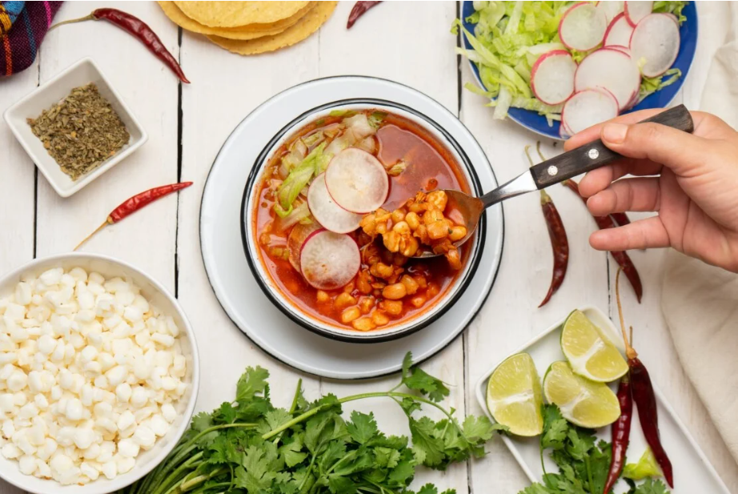

Platillos por Región

Tacos al Pastor
Originarios de la Ciudad de México, los tacos al pastor combinan carne adobada en achiote, piña y cebolla, cocinada lentamente al trompo. Este platillo nació de la influencia árabe del shawarma, adaptado con el toque único del sabor mexicano.
Pozole
El pozole es una sopa festiva hecha con maíz cacahuazintle, carne de cerdo o pollo, y acompañada con lechuga, rábanos, orégano y limón. Cada región tiene su versión, pero todas comparten el espíritu de celebración que acompaña este platillo.


Tamales
Los tamales son un legado ancestral de la cocina prehispánica. Preparados con masa de maíz y rellenos de guisos, envueltos en hojas de maíz o plátano, se disfrutan en todo el país durante celebraciones y festividades familiares.
Enchiladas
Las enchiladas representan el equilibrio perfecto entre lo picante y lo tradicional. Se preparan con tortillas bañadas en salsa roja o verde, rellenas de pollo o queso, y cubiertas con crema, cebolla y queso fresco. Un clásico que varía de estado en estado.